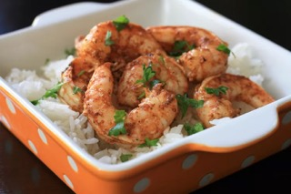

Recipe: Spicy Lime Grilled Shrimp

Cajun seasoning and lime juice give plain grilled shrimp an upgrade. This would be the perfect pairing for some lemon basmati rice for a zesty summertime meal.
Ingredients:
- 3 tablespoons Cajun seasoning (such as Emeril's Essence)
- 1 lime, juiced
- 1 tablespoon vegetable oil
- 1 pound peeled and deveined medium shrimp (30-40 per pound)
Steps
- Mix together Cajun seasoning, lime juice, and oil in a resealable plastic bag. Add shrimp, coat with marinade, squeeze out excess air, and seal the bag. Marinate in the refrigerator for 20 minutes.
- Preheat an outdoor grill for medium heat and lightly oil the grate.
- Remove shrimp from marinade; shake off excess. Discard remaining marinade.
- Cook shrimp on the preheated grill until bright pink on the outside and the meat is no longer transparent in the center, about 2 minutes per side.
Back to Home